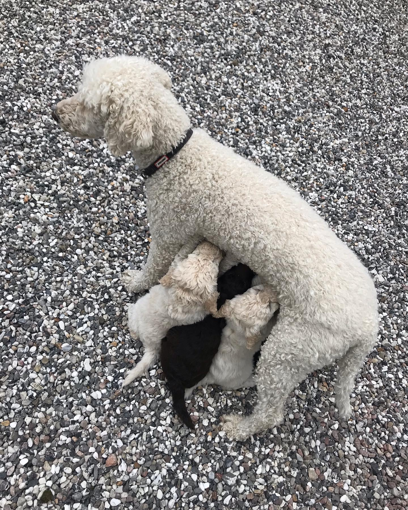
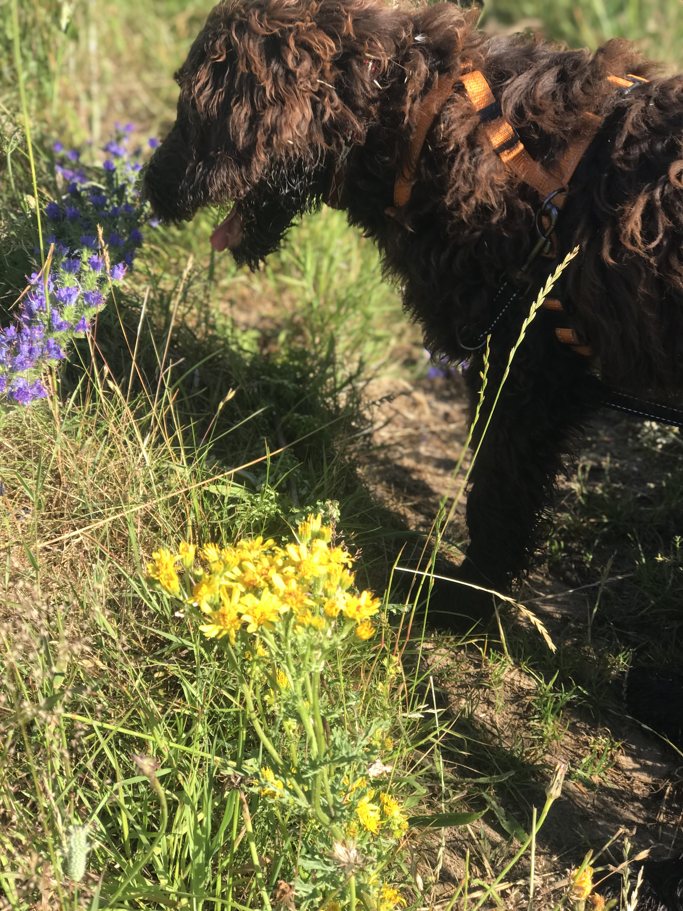

Naturlig føde
Vælg hundefodder der er bygget på, hvad hunden ville spise, hvis den befandt sig i naturen.
En hund ville eksempelvis ikke spise sukker og mel eller grave efter kartofler, hvis den selv skulle finde føde.
Hunde er forskellige og derfor er der også forskel på, hvad de kan tåle. Hold øje med din hunds afføring, det vil være en god indikator på, om den får noget der ikke er godt for den.

Gode gåture
Sørg for at din hund kommer på en masse gode gåture.
Det handler selvfølgelig om, at din hund skal have tilpas med motion for ikke at blive overvægtig, men en god gåtur er så meget mere.
De handler også om at hunden oplever og bliver stimuleret. Derfor er de stille snuseture ligeså vigtige som de lange.

Sjove aktiviteter
Lær din hund at kende og find ud af, hvad den godt kan lide at bruge tid på.
Måske er bolden den bedste, at grave et kæmpe hul kan være sagen eller kunne det være gemmeleg der var hittet?
At lege med din hund er ikke kun for motionens skyld eller træningen, en stor del af legen er at bruge tid sammen og knytte bånd. At hunden føler sig set og elsket, akkurat som et barn.